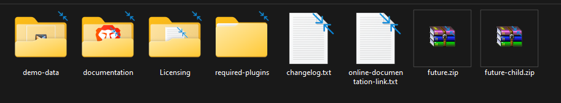
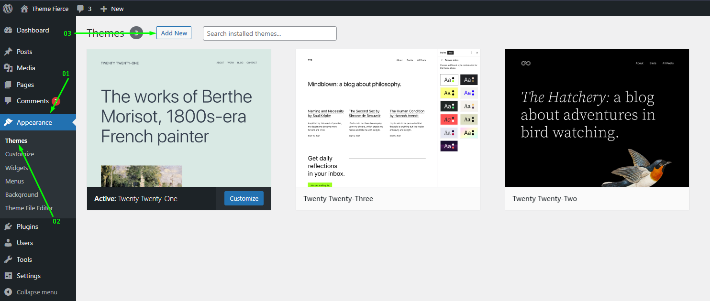
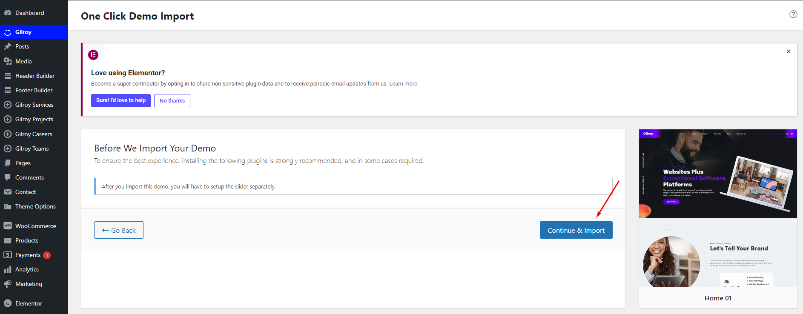
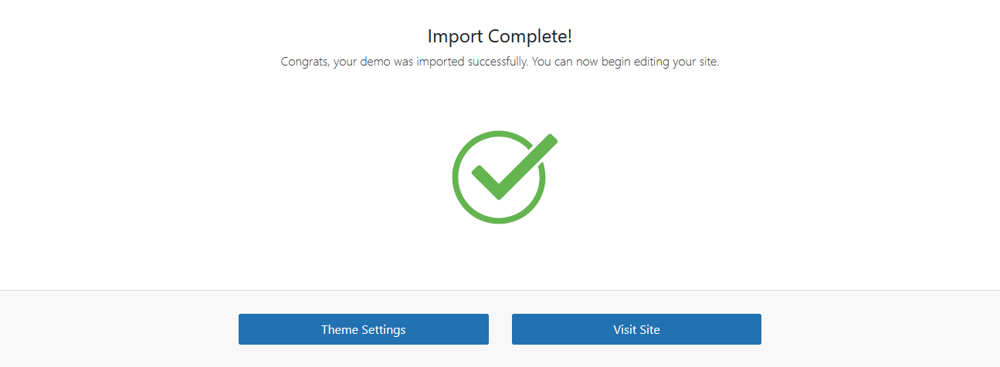
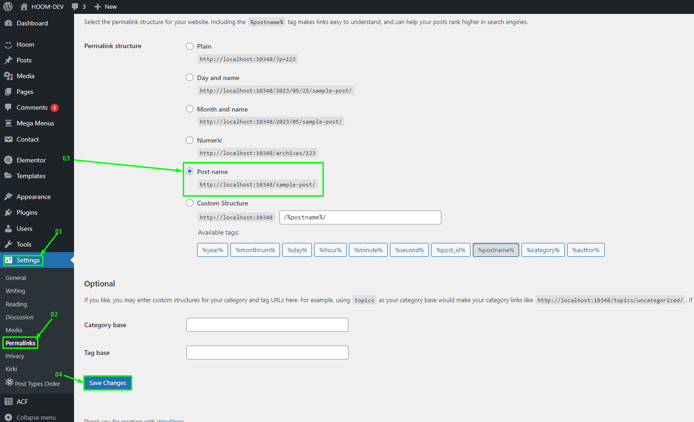
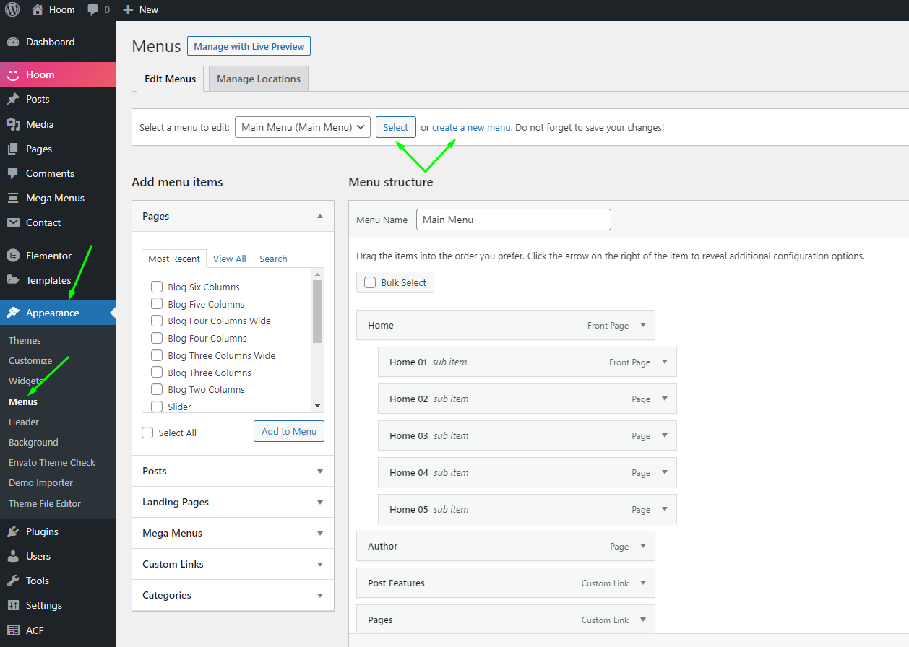
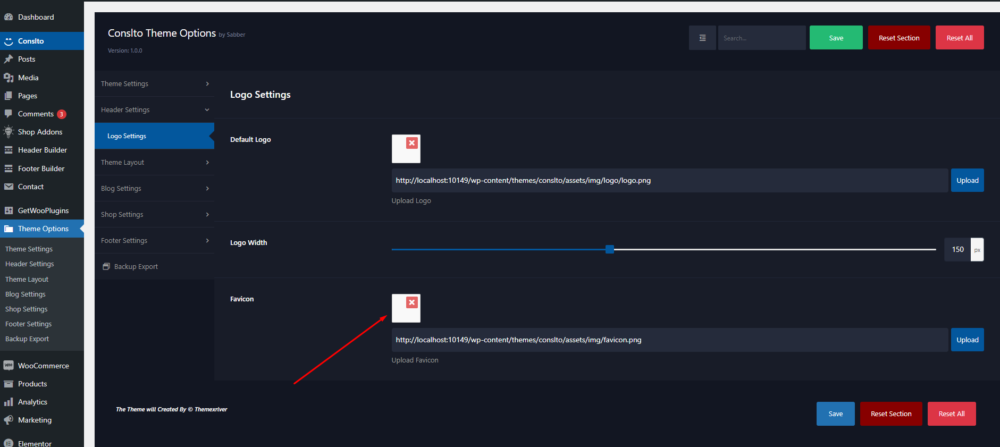
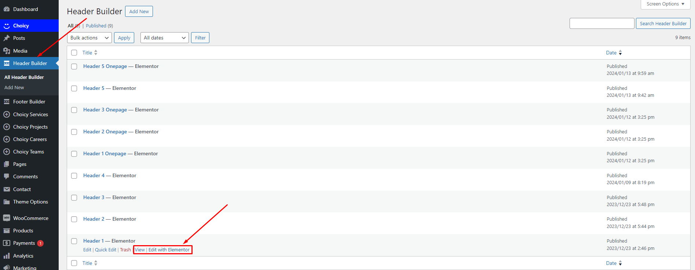
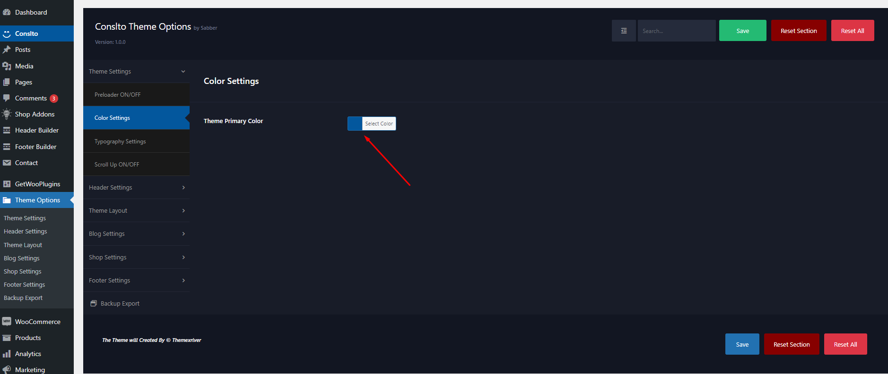
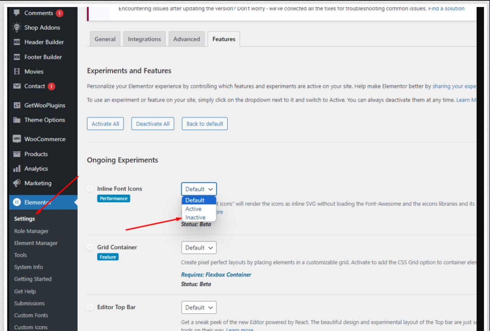

You need at least WordPress version 5.5.0+ installed for this theme to work properly. It is strongly recommended that you always use the latest stable version of Wordpress to ensure all known bugs and security issues are fixed. Other getting_started:
Requirements
PHP version 5.6 or greater. But for maximum speed gain we recommend you to use PHP version 7.3+.
MySQL version 5.6 or greater OR MariaDB version 10.0 or greater.
After purchasing Gilroy theme on themeforest.net with your Envato account, go to your Download page. You can choose to download Gilroy theme only (Installable WordPress Theme) or the entire Gilroy theme package which contains the following files:

You can get the following items after purchasing our
theme from themeforest
Gilroy.zip - An Installable WordPress Theme zip file. this file you need to upload to WordPress.
Gilroy-child.zip - This file contains the basic child theme that you can use with our theme. Just installing it won’t hurt and in case you decide to make some changes/extend the source code of the theme, it will be very helpful because it helps not to lose your custom changes after updating the parent theme. More on child themes
Required Plugins - This folder contains plugins required to work with our theme.
Demo Data - This folder contains the demo content file which will help you to import the demo manually.
Licensing - This folder contains the terms and conditions of the license.
Documentation - This folder contains what you are reading now :)
WordPress Installation
Please follow the instructions in the video to see how you can install WordPress on your hosting:
Important! if you download the All Files archive from ThemeForest and try to upload it to your WordPress, you will receive this error: Theme is missing the style.css stylesheet. Please make sure you unzipped the main archive and are uploading the correct file to your WordPress.
When you are ready to install a theme, you must first upload the theme files and then
activate the theme itself. The theme files can be uploaded in two ways:
1. Using Theme Uploader
Follow the steps as instructed in the images below:
From the dashboard go to AppearanceThemesAdd New Upload Theme
Click on “Choose File” and select Gilroy.zip
Click on “Install Now”.
Active the Theme
N.B: All plugins must be installed and activated if you want your site to look exactly like demo.

Appearance → Themes → Add New Click on “Choose File” and select Gilroy.zip and Click on “Install Now”.Active Gilroy Theme
2. Using FTP Clients
Follow the following steps to upload your theme using FTP clients:
Use an FTP such as FileZilla and go to your WordPress installation director
Navigate to /wp-content/themes/ folder and upload the theme folder there
Log in to your WP Admin Dashboard and open the AppearanceThemes menu
You will now see Gilroy Theme listed among the other themes. Click on Activate and you’re done!
3. Updating Theme
Occationally we provide updates which includes new features and bugfixes. Updating WordPress theme is standard WordPress functionality.
Before Updating Theme:
** Before updating please make sure to keep a backup of your installed theme and plugins (eg. TP Core) to be on safe side.
After completed the above steps successfully, Navigate to Appearance -> Themes. Here you'll see an "Update now" link beside your theme. Click on that link and your theme will be updated automatically.
Here's a quick video tutorial explaining this method:
Method 2: By Uploading zip File
From WordPress Admin Panel, Navigate to Appearance -> Themes.
Activate any other theme (eg. Twenty Seventeen) than the current one.
Delete Gilroy Theme.
Now you have to upload the updated theme zip file. To do this, Navigate to Appearance -> Themes -> Add New -> Upload. Go to browse, and select the zipped theme folder. Hit "Install Now" and the theme will be uploaded and installed.
Method 3: By FTP
Using your FTP client, navigate to "/wp-content/themes/" folder on your server and delete the "Gilroy" folder from there.
Now upload the latest non-zipped theme folder into that "/wp-content/themes/" folder .
After Updating Theme:
** After updating the theme please update all plugins which come with the theme.
4. Installing required plugins
Gilroy theme requires a set of core and additional plugins to function correctly. A plugin is an additional component that offers functionality and features beyond a typical WordPress installation. Without them, most of its functionality is not available. After installing the theme you will be prompted to install the required plugins at the top of your dashboard.
From the dashboard go to Appearance Install Plugins
Toggle all the required plugins and hint “Install”;
The last step will be activating the plugins.
Click on the begin installing plugins link to install all the required plugins.Select all and installSelect all and Activate
Importing Demo Contents
We are providing you two methods for importing demo contents: Automatic and Alternative. You can follow either one of these methods.
One Click Method (Recommended): This method will remove all your existing data, so use this method only in fresh website. This procedure will be faster because you just have to do one click and then everything will happen automatically. If you want an exact clone of demo website without doing any manual configuration after importing data then this method is appropiate for you.
Manually Import: Use this method only if:
Automatic demo import method fails ( Only few of our customers like 5% have experienced this issue due to their hosting limits, in that case we also provide free demo importing service if you contact with us).
You already have a working website with existing contents(eg. posts, pages etc).
1. One Click Method
Want to build your site like the demo? You can do it by only one click!
Note: Please remember that when you are done with the demo import, your some existing settings will be replaced by the demo contents Like: Your menu, Customizer. So it is recommended that you should only do this in fresh site.
Ensure, that the One-Click Import plugin is installed and activated;
From the dashboard go to Appearance Demo Importer
Choose the demo you want to install and click on the “Import” button below;
And change the permalink: From the dashboard go to Settings Permalink
go to Appearance -> Demo ImporterClick on the "Import" button

Click "Continue & Import" Button

Import Complete! Congrats, your demo was imported successfully. You can now begin editing your site.

Change permalink
2. Manual Import
Please follow the instructions below:
Click switch to manual import from right corner.
Choose contents-demo.xml file for all content import
Choose widget-settings.json file for widget import
Choose customizer-data.dat file for customizer import
and last click Import demo data button
Note: We have added all the above files to the Theme package -> Demo Data folder.
Click "switch to manual import" linkChoose all file and click the "import demo data" button
Where Is My Purchase Code?
To learn about how to find
your purchase code. When you buy a product from envato you get a purchase code. visit the following link:
To customize the menu and megamenu please login to wp-admin and navigate to Dashboard AppearanceMenus and follow the following steps:

Change Site Title and Favicon Basic Site Setting
To change your Site title and Favicon login to wp-admin and navigate to Dashboard AppearanceCustomizeSite Identity and follow the following steps:

Change Logo
To change the site logo login to your wp-admin and navigate to
This option only for changing the default logo, If you set Header from Elementor Please Check The Header Builder for changing header logo and content
Dashboard AppearanceCustomizeTheme OptionsHeader
and follow the following steps:
Change Logo From Elementor
To change the site logo login to your wp-admin and navigate to
Or

Set Home and Blog Page
To set the home and blog page, login to wp-admin and go to
Dashboard Settings Reading and follow the following steps:
Theme Background
To change Theme Options header navigate to
Dashboard AppearanceCustomizeTheme SettingsTheme background
and follow the following steps:

Theme Options
Header
To change Theme Options header navigate to
Dashboard AppearanceCustomizeHeader SettingsLogo Settings
and follow the following steps:
Header / Header layout
To change Theme Options navigate to
Dashboard AppearanceCustomizeTheme LayoutHeader Layout
and follow the following steps:
Blog Settings
To change Blog Setting navigate to
Dashboard AppearanceCustomizeBlog Settings
and follow the following steps:
Header Side Info
To change Theme Options navigate to
Dashboard AppearanceCustomizeHeader SettingsSide Info Settings
and follow the following steps:
Footer Layout
To change Theme Options navigate to
Dashboard AppearanceCustomizeTheme LayoutFooter Layout
and follow the following steps:
Footer & Footer Copyright Info
To change Theme Options navigate to
Dashboard AppearanceCustomizeFooter SettingsCopyright
and follow the following steps:
Settings (Error Page Settings)
To change Theme Options navigate to
Dashboard AppearanceCustomizeTheme Layout404 Layout
and follow the following steps:
404 Error in all pages
If you face this type of issue, please update your permalink. To update permalink, navigate to Settings -> Permalink and then click on Save Settings button.
Elementor Icons Error
If you face issue with elementor icon too big Elementor > settings > Feature > Inline Font Icons > Inactive > Save and update and then click on Save Settings button.

Change Log
themexriver Team
never stops Improving, bug fixes, and improvements. See
What's New. We recommend you to read the changelog for
every update.